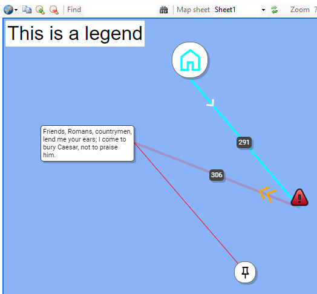

Annotations drawn on the map can be completely at will:
Open annotations.xlsx to to view the workbook used to draw this map. (It's drawn in the middle of the Pacific, to avoid the distraction of the map itself.)
Hover over each of the annotations (icons, markers, lines, etc.). Observe the field names in row 1 and the values in the columns below, to see how the annotations are drawn.
For the brave, the CSS styles used for formatting can be modified by editing goverlay.css.
The 'distance' column creates a text annotation on the middle of the line, usually
the result of a
The 'arrow' column determines the Material Symbol to draw the arrow, it is positioned 20% of the way from the line's start.
The legend is created with 'free' in the icon column; the legend's content, in cell O6,
contains the HTML to draw the legend. The mandatory class 'gofree' provides the formatting.
The style must contain positioning, using a combination of top / left / right / bottom style elements.
For example, to position a legend 5 pixels from bottom-right:
Notice that Classic icons are always attached to the point; they cannot be aligned.
As there are many columns, here is the worksheet transposed:
| Material Icon | Classic Icon | Text Icon | Default Icon | Legend | |
|---|---|---|---|---|---|
| Latitude | 33 | 31 | 32 | 30 | |
| Longitude | -137 | -135 | -138 | -136 | |
| align | top | bottom | left | ||
| arrow | Expand_Less | Stat_2 | |||
| arrowColor | White | Orange | |||
| arrowSize | 32 | 48 | |||
| distance | 291.35974599657 | 305.799725069789 | |||
| icon | $Home | http://maps.google.com/mapfiles /kml/shapes/caution.jpg | Friends, Romans, countrymen, lend me your ears; I come to bury Caesar, not to praise him. | free | |
| iconColor | cyan | ||||
| iconSize | 48 | 32 | 24 | ||
| lineTitle | This 291 Kilometre line is from Home to Caution | I am a faint line because my opacity is 0.2 | This line links Marc Anthony's speech to the push-pin at the bottom | ||
| strokeColor | cyan | red | |||
| strokeOpacity | 0.2 | ||||
| strokeWeight | 3 | 4 | |||
| title | I am a Material Icon, aligned top, above the referenced point | I am a classic icon aligned bottom, below the referenced point | I am a text icon, aligned left. Both this text and the icon text have been split into lines to make a nice rectangular box. | I am a lone pushpin with all the default drawing settings | This is a legend |